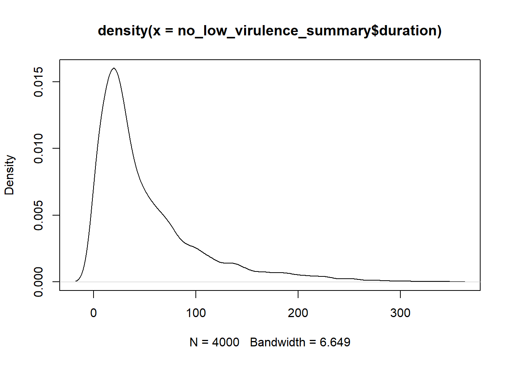
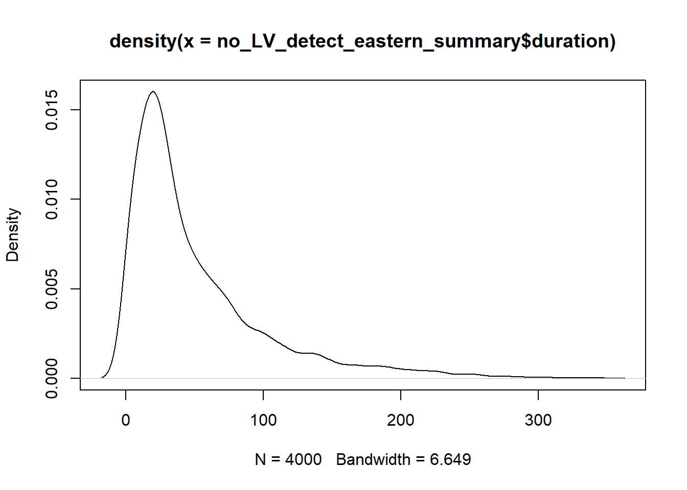

Epidemic Duration
Summarize the epidemic duration of simulated outbreaks
Detection Summary
The summarize_detections function generates a data frame summarizing detection events by iteration. The generate_detect_statistics generates a data frame of summary statistics grouped by preclinical infectious duration and response type.
Hide code
detect_summary <- summarize_detections(detection)
head(detect_summary, 3)| response | preclinical_days | iteration | first_detect | last_detect | duration |
|---|---|---|---|---|---|
| suboptimal | 0 | 1 | 18 | 56 | 38 |
| suboptimal | 0 | 2 | 18 | 49 | 31 |
| suboptimal | 0 | 3 | 18 | 59 | 41 |
Hide code
detect_config_summary <- generate_detect_statistics(detect_summary)
head(detect_config_summary, 3)| summary | response | preclinical_days | iterations | mean | sd | q05 | q25 | q50 | q75 | q95 |
|---|---|---|---|---|---|---|---|---|---|---|
| first_detect | suboptimal | 0 | 500 | 18 | 0 | 18 | 18 | 18 | 18 | 18 |
| first_detect | suboptimal | 1 | 500 | 18 | 0 | 18 | 18 | 18 | 18 | 18 |
| first_detect | suboptimal | 2 | 500 | 18 | 0 | 18 | 18 | 18 | 18 | 18 |
Epidemic Duration
Hide code
duration_summary <- detect_config_summary %>%
filter(summary == "duration")
dim(duration_summary)[1] 9 11Hide code
## Print summary of Epidemic Duration (days)
duration_summary| summary | response | preclinical_days | iterations | mean | sd | q05 | q25 | q50 | q75 | q95 |
|---|---|---|---|---|---|---|---|---|---|---|
| duration | suboptimal | 0 | 500 | 47.752 | 34.86393 | 9.00 | 23.00 | 38.0 | 63.25 | 118.05 |
| duration | suboptimal | 1 | 500 | 62.646 | 45.47743 | 11.95 | 28.00 | 53.0 | 80.00 | 157.10 |
| duration | suboptimal | 2 | 500 | 81.336 | 61.12757 | 13.95 | 35.00 | 64.0 | 110.25 | 205.25 |
| duration | suboptimal | 3 | 500 | 107.550 | 72.39352 | 17.95 | 47.00 | 95.0 | 152.25 | 250.00 |
| duration | optimal | 0 | 500 | 17.258 | 15.70875 | 2.00 | 2.00 | 15.0 | 25.00 | 50.00 |
| duration | optimal | 1 | 500 | 23.564 | 21.14465 | 2.00 | 9.75 | 19.0 | 31.00 | 68.10 |
| duration | optimal | 2 | 500 | 32.520 | 30.70712 | 2.00 | 14.00 | 24.0 | 41.00 | 94.05 |
| duration | optimal | 3 | 500 | 39.916 | 32.17738 | 2.00 | 16.00 | 29.5 | 56.25 | 104.10 |
| duration | low-virulence | 6 | 500 | 284.674 | 79.92990 | 76.95 | 259.75 | 318.5 | 341.00 | 341.00 |
Significance Test
Significance testing performed on optimal and suboptimal detection scenarios
Hide code
## Filter out low virulence scenarios
no_low_virulence <- detection %>%
filter(response != "low-virulence")
no_low_virulence_summary <- summarize_detections(no_low_virulence)
range(no_low_virulence_summary$duration)[1] 2 343Hide code
plot(density(no_low_virulence_summary$duration))
Linear Model
Hide code
model_duration <- lm(duration ~ preclinical_days * response,
data = no_low_virulence_summary)
summary(model_duration)
Call:
lm(formula = duration ~ preclinical_days * response, data = no_low_virulence_summary)
Residuals:
Min 1Q Median 3Q Max
-105.550 -22.673 -7.752 14.447 256.664
Coefficients:
Estimate Std. Error t value Pr(>|t|)
(Intercept) 17.258 1.932 8.932 < 2e-16 ***
preclinical_days1 6.306 2.733 2.308 0.0211 *
preclinical_days2 15.262 2.733 5.585 2.49e-08 ***
preclinical_days3 22.658 2.733 8.292 < 2e-16 ***
responsesuboptimal 30.494 2.733 11.160 < 2e-16 ***
preclinical_days1:responsesuboptimal 8.588 3.864 2.222 0.0263 *
preclinical_days2:responsesuboptimal 18.322 3.864 4.741 2.20e-06 ***
preclinical_days3:responsesuboptimal 37.140 3.864 9.611 < 2e-16 ***
---
Signif. codes: 0 '***' 0.001 '**' 0.01 '*' 0.05 '.' 0.1 ' ' 1
Residual standard error: 43.2 on 3992 degrees of freedom
Multiple R-squared: 0.3075, Adjusted R-squared: 0.3063
F-statistic: 253.2 on 7 and 3992 DF, p-value: < 2.2e-16Analysis of Variance (ANOVA)
Hide code
anova(model_duration)| Df | Sum Sq | Mean Sq | F value | Pr(>F) | |
|---|---|---|---|---|---|
| preclinical_days | 3 | 955037.2 | 318345.721 | 170.54314 | 0 |
| response | 1 | 2162854.5 | 2162854.542 | 1158.67744 | 0 |
| preclinical_days:response | 3 | 190807.1 | 63602.367 | 34.07285 | 0 |
| Residuals | 3992 | 7451698.8 | 1866.658 | NA | NA |
Plot Duration
Prepare to plot the calculated median epidemic duration (days)
Hide code
duration_summary$response <- ordered(factor(duration_summary$response), c("optimal", "suboptimal", "low-virulence"))
response_colors <- c("#74add1", "orange2", "red4") Generate Plot Using Patchwork Package
The plot_epidemic_duration function plots epidemic duration by scenario, with epidemic duration (days) on the x-axis and the duration of incubation phase transmission on the y-axis.
Hide code
duration_plot <- plot_epidemic_duration(duration_summary, regional_scenario)Hide code
duration_plot